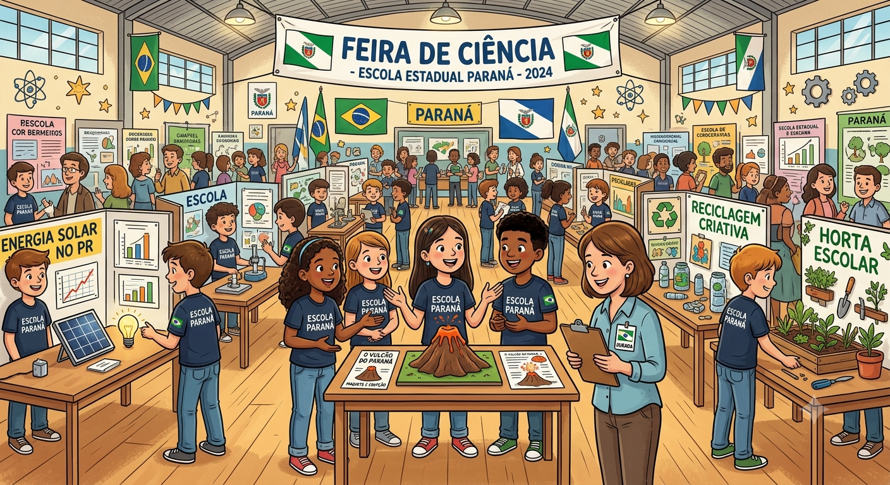
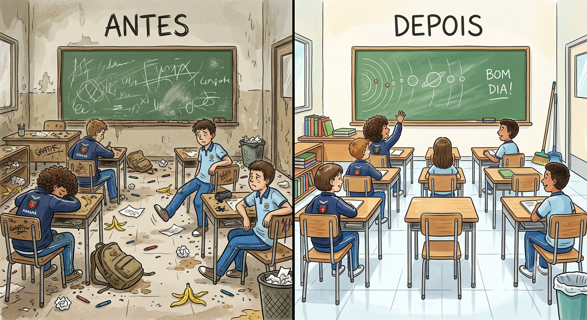

NOSSA ESCOLA NOSSO COMPROMISSO
O QUE NÓS PODEMOS FAZER PARA TORNAR NOSSA ESCOLA AINDA MELHOR?

A escola podeira organizar projestos de arte,música,teatro,ciễncias,tecnologia e meio ambiente. Essas atividades ajudaria os alunos a descobrir novos interesses e desenvolver diferentes habilidades.
O QUE PODEMOS FAZER PARA TORNAR NOSSA ESCOLA AINDA MELHOR?

A limpeza das salas prescisam ser feitas com mais frequência e atenção.É importante manter o chão limpo, as carteiras organizadas e as lixeiras vazias. Um ambientem limpo é mais agradável para todos.
A escola podeira organizar projestos de arte,música,teatro,ciễncias,tecnologia e meio ambiente. Essas atividades ajudaria os alunos a descobrir novos interesses e desenvolver diferentes habilidades.